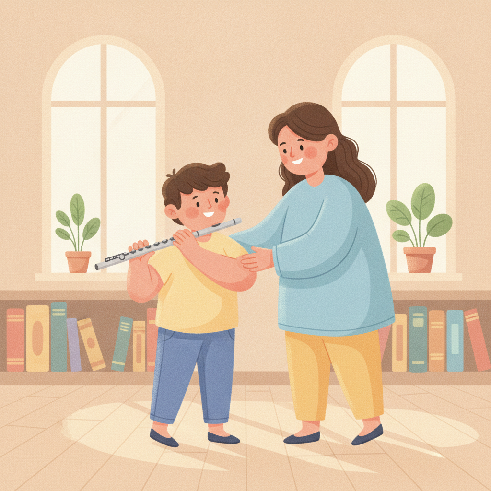
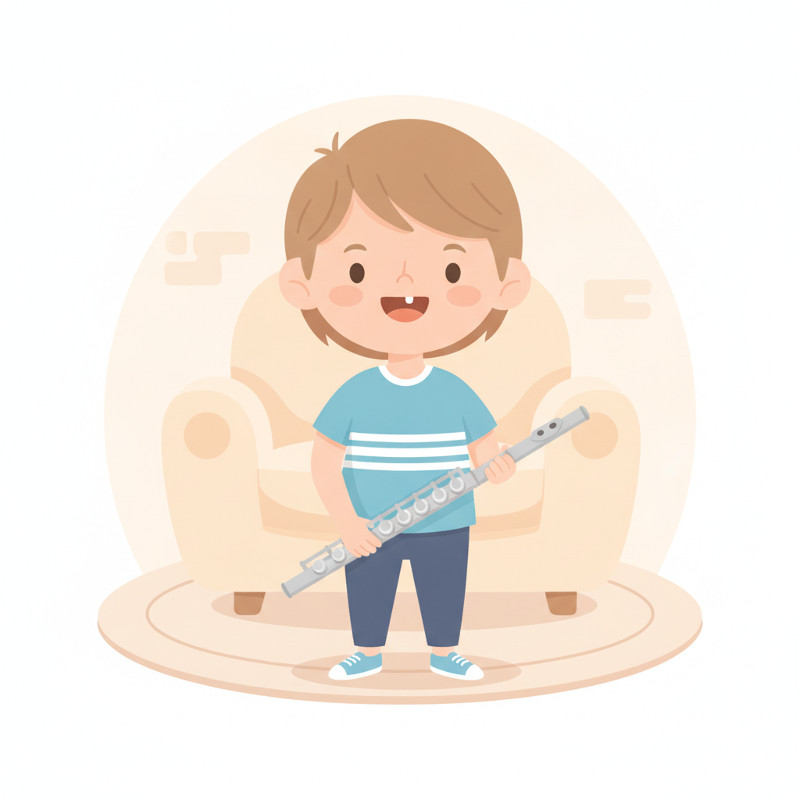
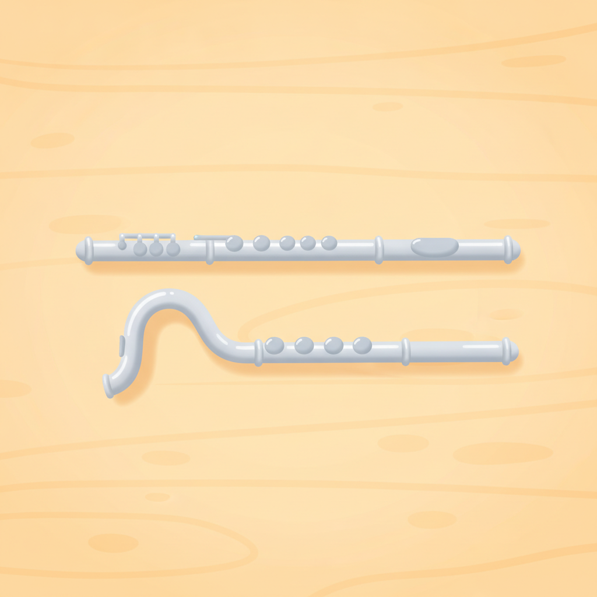

孩子幾歲適合學長笛？先看門牙、手臂長度和肺活量
「他很想吹長笛，可是現在會不會太小？」這題我常被問到。長笛跟鋼琴不一樣，它的時機不是看年齡，是看身體到位了沒有。
孩子學長笛，建議換完上排門牙、大約 8 歲以上再開始會順很多。門牙是吹奏嘴型的支點，牙齒鬆動或缺一顆的時候，氣會從旁邊漏掉。
除了牙齒，還要看手臂搆不搆得到最下面的按鍵、氣夠不夠撐完一句旋律。這三件事到位，年齡差一點都沒關係；沒到位，硬學會很辛苦。

來問這題的家長，心裡多半已經想讓孩子學了，只是不確定時機。怕太早，孩子受挫；怕太晚，又擔心錯過所謂的黃金期。兩邊都怕，就一直拖著。
我想先說一句：學音樂沒有錯過就回不去的那條線。真正會讓孩子放棄的，通常不是晚了兩年，而是太早拿起樂器，一直做不到，最後把「我不行」記在身上。
為什麼長笛看的是牙齒，不是年齡
吹長笛的原理，跟吹汽水瓶口很像——把一道集中的氣切在吹口的邊緣上，聲音才會成形。這道氣要穩，靠的是嘴唇圍出一個固定的形狀，而上排門牙就是這個形狀的支點。
所以牙齒的狀態會直接影響出不出得了聲。門牙在搖、或剛好掉了一顆，嘴唇就撐不住那個形，氣從縫裡散掉，吹出來只有風聲。
這跟認不認真、有沒有天分，都沒有關係。是零件還沒裝好。

換牙期硬學，會發生什麼事
最麻煩的不是那幾個月吹不出聲音，是孩子怎麼解釋這件事。
八歲的孩子還不會想到「我的門牙還沒長好」，他只會看到旁邊的同學都有聲音，只有自己沒有。結論就變成：我比較笨、我沒有天分、我不適合這個。
這個印象黏得很久。等牙齒真的長好、身體終於準備好了，他反而不想再碰了。
晚一年開始，頂多少學一年。太早開始而受挫，代價可能是永遠不學了。
除了牙齒，還要看手臂和肺活量
長笛是橫著拿的，這個姿勢對小孩子的身體其實不太友善。牙齒之外，還有三件事要一起看：
- 手臂長度——右手要伸得到最下面的按鍵。搆不到的孩子會聳肩、手腕折起來，一堂課下來肩頸都是緊的。
- 手指跨度——手掌太小的話，按鍵之間會撐得很吃力，長時間下來手指容易僵。
- 氣息與換氣——氣不夠不是吹不響，是吹一下就頭暈、撐不完一句旋律，很容易挫折。
另外還有一項常被忽略的：站得住十幾分鐘。長笛多半是站著練的，這也是體力。
七歲就很想學，一定要等嗎？
不一定要乾等。如果孩子的門牙已經穩了，只是身高手長還不夠，有一個很實際的解法——彎管笛頭。
它把笛頭做成 U 形，樂器整體長度變短、重心也拉近身體，手臂比較短的孩子就搆得到按鍵，姿勢不必硬撐。等長高一些，再換回直的笛頭，銜接非常自然。
這種笛頭不一定要買，很多老師和琴行可以租借，用個一兩年就換掉了。要準備哪些東西，我在初學樂器要準備什麼那篇寫得更細。

這些情況，我會建議先不要開始
講了這麼多可以的條件，也講一下不建議的。這幾種狀況，我通常會請家長再等一等：
- 上排門牙正在鬆、或剛掉還沒長出來——這是最明確的一項，等就對了。
- 右手怎麼調整都搆不到最下面的按鍵——連彎管笛頭都撐不住的話，就是身體真的還沒到。
- 吹幾口就明顯頭暈——如果孩子有氣喘或呼吸道的狀況，開始之前建議先問過醫生。
- 想學的是家長，不是孩子——這一項跟身體無關，但它決定得了能不能撐過前三個月。
這些條件不是拒絕，是時間差。等一等，後面會輕鬆非常多。
那太晚開始，會不會來不及？
國中、高中才開始，完全來得及。
大一點的孩子理解力好、專注時間長、肺活量也成熟，同樣一段內容常常學得比小小孩快。他們缺的只是起步的時間，不是能力。
唯一需要提早規劃的，是想走音樂班或科班路線——那條路有術科考試的時程要對，得另外算。但如果目標是「讓他有一個能陪自己很久的樂器」，什麼時候開始都不遲。連大人都不遲，我另外寫了一篇成人零基礎學音樂會不會太晚。
還在等牙齒的這段時間，可以做什麼
如果評估下來是「再等半年」，那半年不必空著。有幾件事現在就能做，而且之後會直接派上用場：
- 先練吹氣，不碰長笛——用吸管吹水、吹一張紙巾，練的是把氣吹得穩、吹得集中。這個做法我在在台北幫孩子找長笛老師那篇也提過。
- 先從直笛或鋼琴接觸讀譜——把節奏和看譜先解決掉，之後就能專心處理氣和嘴型。
- 多聽長笛的聲音——讓他知道自己在往什麼樣的聲音走，動機比什麼都重要。
還沒決定要學長笛還是鋼琴的話，可以先看怎麼幫孩子挑第一個樂器，那篇是從個性和家裡空間去比的。
不確定的話，讓我看一眼就知道
年齡是最粗的一個指標。同樣是八歲，兩個孩子的門牙進度、手臂長度、氣的長短可以差很多，隔著螢幕算數字，怎麼算都不準。
當面看反而很快：門牙的狀態、右手搆不搆得到、拿起來會不會聳肩，十幾分鐘就有答案了。是現在可以開始，還是再等半年，我會直接告訴你。
所以別一個人在家糾結了。你可以先用 Line 跟我說孩子幾歲、門牙換到什麼程度、平常是不是容易喘，我先幫你判斷現在適不適合，不必急著約課。
常見問題
孩子幾歲適合學長笛？
建議換完上排門牙、大約八歲以上再開始。門牙是吹奏嘴型的支點，牙齒鬆動或缺一顆的時候氣會從旁邊漏掉，孩子會覺得自己怎麼吹都沒聲音。等牙齒穩定再學，會順很多。
孩子七歲就想學長笛，一定要等嗎？
不一定要硬等。可以先用彎管笛頭，把樂器長度縮短、重心拉近身體，手臂比較伸得到。但如果上排門牙正在鬆或剛掉，通常還是先等牙齒穩定比較好。
什麼是彎管笛頭？孩子一定要買嗎？
彎管笛頭是把笛頭做成 U 形的兒童用配件，能縮短樂器整體長度、讓重心靠近身體，手臂較短的孩子比較搆得到按鍵。不一定要買，很多老師和琴行可以租借，長高之後換回直笛頭即可。
換牙期間可以先做什麼準備？
可以先練吹氣的控制，例如用吸管吹水、吹紙巾，感受穩定而集中的氣流；也可以先從直笛或鋼琴接觸讀譜與節奏。等門牙長好，這些準備都會直接派上用場。
快速重點
- 長笛看的是牙齒不是年齡，建議換完上排門牙、約 8 歲以上開始。
- 換牙期硬學，孩子容易把「吹不出聲」解釋成自己不行。
- 還要看手臂搆不搆得到按鍵、氣夠不夠撐完一句、站不站得住。
- 七歲很想學可以用彎管笛頭，多數能租不必買。
- 等待期間先練吹氣、先解決讀譜，之後都用得上。